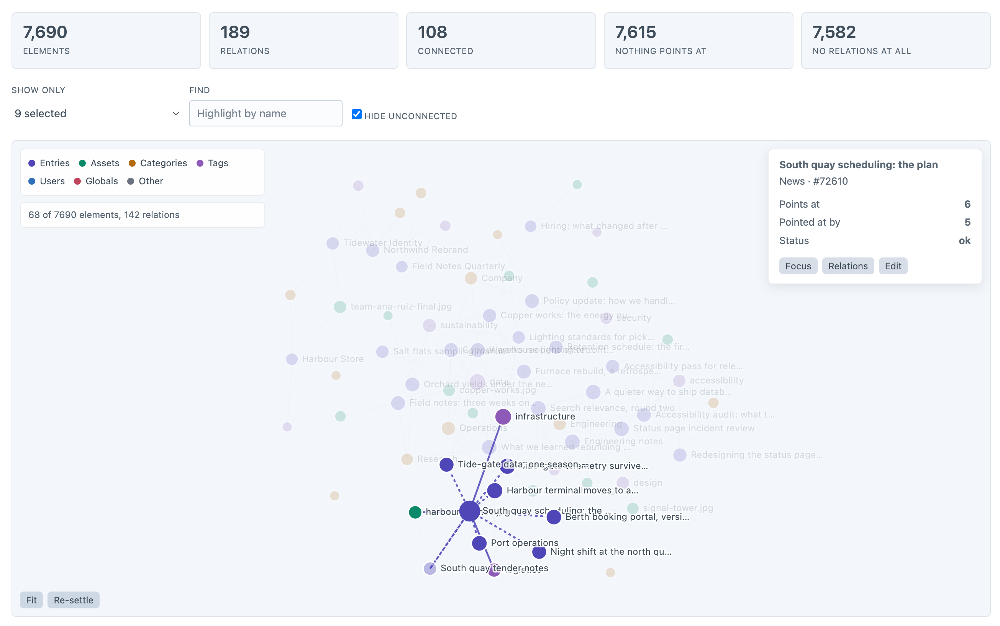
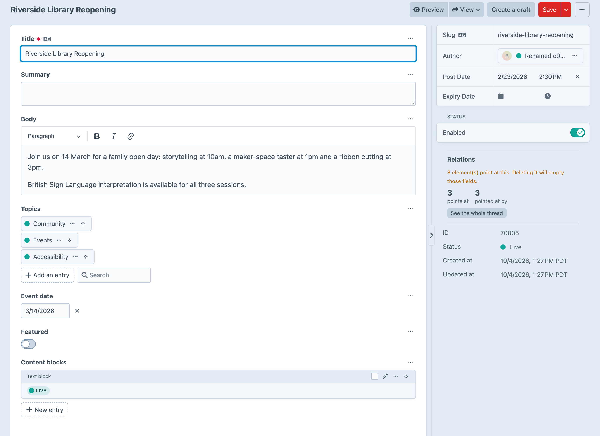

Every relation, from both ends.
What points at what, what nothing points at, and what breaks if you delete it.
Yarn reads the relations Craft stores, and the ones it doesn’t, and answers at the moment it matters — just before somebody presses Delete.
Every element and every relation, coloured by kind. Click one to light up its threads.

What it points at, what points at it, and what breaks further down.
Each one says what to do about it, not just what is wrong.
A panel in every element’s sidebar that says what is using it, and what emptying those fields would cost.

Every screen is a command too, with an exit code a pipeline can stop on.
Your plugin’s relations go in. Yarn’s answers come out in Twig.